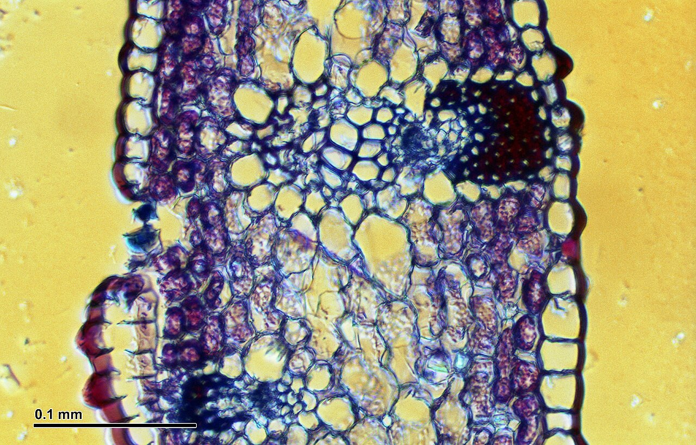
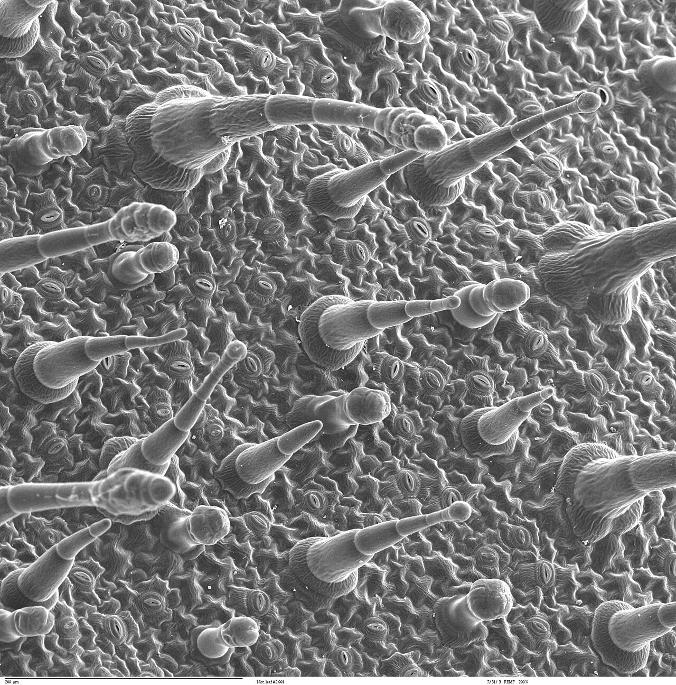

IB Biology · Higher Level · Theme B · Form & Function
B3.1 GAS EXCHANGE
Welcome to Club O₂ — the party only runs if the VIP oxygen gets in and the carbon-dioxide smoke gets out. Every organism is a venue with a door policy. The door is an exchange surface. The aircon is ventilation. And the crowd never stops dancing.
B3.1.1 · Gas exchange as a vital function in all organisms
ACT 1 · THE CROWD PROBLEM
Every living thing runs the same two-for-one deal: absorb one gas, release another. The trick is being big enough to need a door.
🎟 THE UNIVERSAL DEAL
All organisms exchange gases — it's how the party (metabolism) keeps running:
YOU (aerobic respiration): O₂ in → ATP. CO₂ is the waste smoke and must be removed, or the venue fills up and the crowd dies.
REDWOOD / LEAF (photosynthesis): CO₂ in → organic molecules (carbon fixation). O₂ is the exhaust blown back out.
EVERYONE: diffusion is the basis of it all — molecules drifting randomly from high to low concentration. Simple, slow, free.
📏 WHY SIZE IS THE PROBLEM
Diffusion is slow. It only works if the distance is short and the surface is big relative to the volume that needs gas.
SMALL CLUB (flatworm, amoeba)
🪱 Everyone's at the window
Huge surface-area-to-volume ratio + tiny distance from centre to exterior → the outer skin alone is enough. No doors needed.
MEGACLUB (whale, you)
🐋 The centre can't breathe
SA:Vol ratio shrinks as you grow (cube law), and the distance from the middle to the outside grows. A specialised, much larger exchange surface is required — alveoli in lungs, gills, or spongy mesophyll in a leaf.
EXAM GOLD: always give BOTH reasons when asked why big organisms need exchange systems: ① SA:Vol ratio decreases with size ② distance from the centre of the organism to the exterior increases. One without the other = half marks.
🦎 SAME SHAPE, DIFFERENT VENUES
Exchange surfaces converge on the same trick — make tiny spheres. Spheres have the smallest SA:Vol of any shape, but make them very small and the total area explodes. Species build their own version:
Flatworm / axolotl: direct diffusion over the body surface. Axolotls keep feathery external gills even as adults — only 10 µm between the blood in the capillaries and the water outside. (Also: they're critically endangered — bonus general knowledge.)
Insect: tracheal tubes delivering air straight to tissues — no blood involved.
Fish: folded gills pulling dissolved O₂ out of water.
Mammal: spongy lungs swapping gases with the atmosphere.
NOS — evidence over vibes: "alveoli the size of a tennis court" is a claim, not data. To test it you need evidence-based numbers: how many alveoli, and their mean surface area. Don't repeat numbers you can't source.
B3.1.2 · Properties of gas-exchange surfaces
ACT 2 · THE DOOR RULES
Every venue has the same four rules posted by the door. Break one and the club suffocates.
🪩
RULE 1 · LARGE
the dance floor has to fit the whole crowd
The total surface area is large relative to the volume of the organism. More floor = more gas swapped per second. Alveoli: ~300 million of them, total area ≈ 40× the outside of your body. Leaf: the moist cell walls of the spongy mesophyll.
🧵
RULE 2 · THIN
one-cell-deep velvet rope
Gases must diffuse only a short distance — usually through a single layer of cells. Alveolar wall ~0.2 µm + capillary wall one cell thick. Short rope = fast entry.
💧
RULE 3 · MOIST
wet floor — gases dissolve first
Gases diffuse across membranes far more easily when dissolved in a film of moisture. Terrestrial organisms keep the surface wet so O₂ and CO₂ can dissolve and slide through. A dry lung is a dead lung; a dry leaf shuts up shop.
🚪
RULE 4 · PERMEABLE
the door lets both gases through
Oxygen and carbon dioxide diffuse freely across the surface. No bouncer checks IDs — both gases are on the guest list. (Permeable = lets molecules pass; permeable to gases is all we need here.)
MNEMONIC — the door sign: Surface · Moisture · Absorptive/permeable · Rich blood network · Thin — SMART. The syllabus's four are large, thin, moist, permeable; "rich blood network" is the bonus that plugs straight into Act 3.
B3.1.3 · Maintenance of concentration gradients at exchange surfaces in animals
ACT 3 · THE GRADIENT LAW
Diffusion only flows downhill. If the inside ever matches the outside, the party stops. The club must keep the inside O₂-poor and CO₂-rich — forever.
⛰ DIFFUSION IS LAZY
Gas moves from high concentration to low concentration, and diffusion evens things out — which would slowly kill the gradient and stop all exchange. So the club runs three systems to keep the air fresh:
DENSE CAPILLARY NETWORKS — plumbing packed around the exchange surface (alveoli are wrapped in a basket of capillaries).
CONTINUOUS BLOOD FLOW — the pipes never stop. Respiring blood arrives with low O₂, high CO₂, so O₂ keeps diffusing in and CO₂ keeps diffusing out. The blood itself is the moving staircase.
VENTILATION — refresh the air (or water) at the door: lungs breathe air in and out, gills pump water one way.
In tiny organisms (flatworm again) there's no plumbing — it's the cells' own respiration that keeps the gradient alive: they burn O₂ and make CO₂, so inside stays low-O₂/high-CO₂ automatically.
📊 READ THE STEPS (textbook Figure 4 numbers)
Partial pressure of O₂ (mm Hg) on the journey in — the gradient staircase that drives everything:
Location
pO₂ / mm Hg
Why
Atmospheric air in
159
Fresh outside air, ~21% oxygen
Air in the alveoli
105
Mixed with stale air left from the last exhale — this is why alveolar air isn't as rich as fresh air
Blood arriving at alveoli
40
Already dumped its O₂ into respiring tissues — the low end of the staircase
Air exhaled
120
Not all the O₂ gets taken up — you breathe out plenty of it
CO₂ runs the same staircase backwards: blood arriving ~45 → alveoli 40 → exhaled 27 (mm Hg). High CO₂ in blood, low in air → CO₂ diffuses out.
DBQ TRAP: "Why is alveolar O₂ lower than inhaled air?" Two reasons: ① it mixes with stale air left in the lungs ② O₂ is constantly diffusing into the blood. And nitrogen barely diffuses at all — the blood is already saturated with it, so there's no gradient.
MAMMAL — TIDAL SYSTEM
🫁 The in-and-out dance
Periodically expel stale air, inhale fresh air. Prevents O₂ dropping too low and CO₂ rising too high. Ventilation rate is tuned to the CO₂ concentration of the blood — more CO₂, faster breathing.
FISH — ONE-WAY SYSTEM
🐟 The counterflow queue
Water flows in the mouth, over the gills, out the gill slits — one-way. Blood flows through the gills in the opposite direction, so water always meets blood that's slightly less O₂-rich than itself. Gradient holds along the whole gill. No such luck in a tidal lung.
B3.1.4 · Adaptations of mammalian lungs for gas exchange
ACT 4 · THE BUILDING (MAMMAL CLUB)
All mammals use lungs — even whales. The route from the street to the VIP booths is a masterpiece of branching design.
🏗 THE ROUTE IN
Trachea (windpipe) — the entrance corridor, ciliated + lined with mucus: the dust-trap lane that catches and expels foreign particles.
Bronchi — two staircases (left lung has 2 lobes, right has 3; the heart squashes the left one). Cartilage keeps them open like rigid ducting.
Bronchioles — branching hallways. Smooth muscle in their walls lets the venue narrow or widen the corridors (controlled by the autonomic nervous system).
Alveolar ducts → alveoli — clusters of 5–6 air-sac booths where the actual swap happens.
THE FOUR EXAM ADAPTATIONS (memorise this list): ① surfactant ② branched network of bronchioles ③ extensive capillary beds ④ huge surface area. Write all four, then elaborate.
🎈 THE VIP BOOTHS (ALVEOLI)
~300 MILLION in an adult pair of lungs — total surface area ≈ 40× the outside of the body, roughly a tennis court. Diameter 0.2–0.5 mm each.
WALL = ONE LAYER OF CELLS, ~0.2 µm thick.Type I pneumocytes (AT1 cells) are the flattened, ultra-thin booth walls that do the exchanging.
SURFACTANT:Type II pneumocytes (AT2 cells) secrete it. It forms a monolayer on the moisture film — hydrophilic heads in the water, hydrophobic tails facing the air — lowering surface tension so the wet walls don't stick together when you exhale. Without it, the alveoli collapse.
CAPILLARY BEDS wrap each booth; blood and air end up a microscopic distance apart. The basket of capillaries is almost as big as the alveoli themselves.
ELASTIC + COLLAGEN FIBRES: collagen strengthens the tissue; elastic fibres stretch during inhalation and recoil for passive exhalation — the building springs back on its own.
THE CLUB O₂ CUTAWAY: one air-sac booth, drawn to order. Gold dashed line = surfactant monolayer (AT2's spray stops the wet walls sticking on exhale). Pink nuclei = AT1 wall cells, one layer thin. O₂ (gold) diffuses in across the film; CO₂ (violet) diffuses out into the booth. The capillary basket with its RBCs sits a microscopic distance from the wall.
COPD DBQ (a favourite): smoking → airways narrow + fewer, larger air sacs → less gas-exchange surface. Why are COPD patients always tired? Less O₂ reaching the blood → less aerobic respiration → less ATP. Why an enlarged right heart? Damaged lungs raise blood pressure in the pulmonary circulation → the right ventricle works overtime → it hypertrophies.
B3.1.5 · Ventilation of the lungs
ACT 5 · THE LIFT SYSTEM
Ventilation is just physics with muscles: expand the room → pressure drops → air gets pulled in. Shrink the room → pressure rises → air gets pushed out.
⚙️ THE PRESSURE GAME
If a gas spreads into a bigger volume, its pressure falls. If it's squeezed into a smaller volume, its pressure rises. And gas always flows from high pressure to low pressure. So the chest is a box whose walls move:
INSPIRATION (inhale):diaphragm contracts → flattens (the floor drops) + external intercostals contract → ribs up and out (the roof rises). Thorax volume ↑ → pressure ↓ below atmospheric → air is PULLED in. This is active — muscles do work.
EXPIRATION (exhale): muscles relax → the diaphragm domes back up, ribs drop, elastic fibres recoil → volume ↓ → pressure ↑ above atmospheric → air forced out. At rest this is mostly passive.
FORCED EXPIRATION: internal intercostals contract → ribs pulled down/in + abdominal muscles contract → push the abdominal organs and diaphragm upwards. Now it's active.
MNEMONIC: DROP THE FLOOR, LIFT THE ROOF, SUCK THE AIR (in). LET GO, PLUS SQUEEZE (out — forced). You never push air into your lungs — the pressure difference pulls it. "You don't inhale; the room does."
📋 THE MUSCLE CHOREOGRAPHY (table format the examiners love)
Muscle / part
Inspiration
Expiration
Diaphragm
Contracts, flattens, moves down
Relaxes, pushed up into a dome
External intercostals
Contract — ribs up & out
Relax — ribs return
Internal intercostals
Relax (stretched)
Contract — ribs down & in (forced)
Abdominal muscles
Relax, allow diaphragm to push out
Contract — push organs + diaphragm up (forced)
Thorax volume / pressure
Volume ↑ → pressure ↓ → air in
Volume ↓ → pressure ↑ → air out
Bonus: the trachea and bronchi keep their shape with cartilage; bronchioles use smooth muscle to vary their width — the venue can constrict or relax its corridors.
B3.1.6 · Measurement of lung volumes
ACT 6 · THE FIRE MARSHAL'S METER
How much air can the venue hold? The marshal measures four volumes — and so will you in the lab (AOS).
📏 THE FOUR VOLUMES
Volume
Definition
Rough size
Tidal volume
Air in one normal breath in AND out (also the stale air exhaled each breath)
~500 mL
Inspiratory reserve (IRV)
Extra you can force IN after a normal inhalation
~3 L
Expiratory reserve (ERV)
Extra you can force OUT after a normal exhalation
~1.2 L
Vital capacity
Max exhale after max inhale (= IRV + tidal + ERV)
~4.5–5 L
Residual volume (~20% of total lung capacity) never leaves the lungs — it's why simple bell-jar apparatus is unsafe for repeat breathing: CO₂ builds up in the dead space.
AOS · HOW TO MEASURE
🧪 Spirometer + simple gear
A spirometer (float on water + alkali to absorb CO₂) measures flow in and out; from flow, volumes are deduced. Simple version: exhale one normal breath through a delivery tube into a graduated bell jar and read the volume. Balloon + water displacement works too (1 mL = 1 cm³).
VENTILATION RATE
⏱ Breaths per minute
Adult at rest: 12–16 breaths/min. Can jump ~5–6× with exercise. Bigger people (taller, higher altitude) tend to have larger capacities; smokers and obesity lower them.
KNOW THE EQUATION:Vital capacity = IRV + tidal volume + ERV. The exam will give you a spirometer trace and ask you to label or calculate — IRV sits above tidal, ERV below it, vital capacity is the whole swing.
B3.1.7 + B3.1.8 · Adaptations for gas exchange in leaves · Distribution of tissues
ACT 7 · THE ROOFTOP GARDEN
The plant venue is solar-powered: it takes in CO₂, blows out O₂, and brews its own sugar — while trying not to leak water. Every adaptation is a compromise between gas exchange and water conservation.
🌿 THE VENUE'S BLUEPRINT (B3.1.7)
WAXY CUTICLE — the roof sealant. Waterproof layer secreted by the epidermis; low permeability to gases. Thicker on the upper surface and in dry-habitat plants. Keeps the club from leaking.
EPIDERMIS — the skin layer, top and bottom.
PALISADE MESOPHYLL — upper floor: tightly packed cylindrical cells stuffed with chloroplasts = the solar panels (max light absorption).
SPONGY MESOPHYLL — lower floor: loosely packed rounded cells with a network of air spaces = the lobby where the gas deals happen. The permanently moist cell walls provide a huge exchange surface: CO₂ dissolves, diffuses to chloroplasts; O₂ diffuses out.
STOMATA + GUARD CELLS — the bouncer windows (usually on the lower epidermis). Guard cells inflate/deflate to open or shut the pore.
VEINS — vascular bundles running through the middle: xylem (water + minerals up, the bar supply line) + phloem (sugars out, the till). Central placement = every tissue gets served.

WAXY CUTICLE + UPPER EPIDERMIS
PALISADE MESOPHYLL
SPONGY MESOPHYLL + AIR SPACES
LOWER EPIDERMIS
READ IT LIKE THE EXAMINER: same five layers as the plan diagram above — but real tissue. This is a monocot (Iris): palisade is one thin band, veins scattered through the spongy layer. Spot the pale gaps in the spongy mesophyll = air spaces; that's where CO₂ diffuses to the chloroplasts. Image: Josef Reischig, CC BY-SA 3.0.
✏️ DRAW IT: PLAN DIAGRAM (B3.1.8)
You must be able to draw and label a plan diagram of a transverse section of a dicotyledonous leaf. Plan diagrams show the distribution of tissues — big outlines, junctions between tissues, NO individual cells.
UPPER EPIDERMIS skin layer, under the waxy cuticle
VASCULAR BUNDLE xylem + phloem in the vein — central
SPONGY MESOPHYLL loose cells + air spaces, near the stomata
LOWER EPIDERMIS with stomata + guard cells (the windows)
Top → bottom: upper epidermis · palisade · vascular bundle · spongy · lower epidermis. That's the order the examiner wants in your plan diagram.
SUN VS SHADE LEAVES DBQ: sun leaves are thicker with a thicker cuticle and more layers of palisade (more chloroplasts = more light capture, better water retention). Shade leaves are thinner with less palisade. Deduce which is which from the micrograph — then explain the trade-off.
B3.1.9 · Transpiration as a consequence of gas exchange in a leaf
ACT 8 · THE WATER BILL
The moist exchange surface is a leak. Open the windows for CO₂ and water vapour escapes. Transpiration is the price of doing business.
💦 WHY IT LEAKS
Gas exchange only works if the mesophyll walls are moist. Moisture evaporates (unless the air is saturated), and the water vapour diffuses out through the open stomata. That loss — from leaves and stems — is transpiration. Water is replaced from the roots up through the xylem (the transpiration stream), and some is used in photosynthesis.
KEY IDEA: the leaf can't have moist exchange surfaces without paying an evaporation bill. The cuticle, stomatal placement and guard cells are all damage control on that leak.
🌡 THE FOUR FACTORS (know the correlation directions)
Factor
Effect on transpiration
Why
Temperature ↑
↑ positive correlation
More energy to break hydrogen bonds → faster evaporation; warm air holds more vapour before saturating
Humidity ↑
↓ negative correlation
Smaller water-vapour gradient between air spaces and outside → slower diffusion. Saturated air = zero transpiration
Wind ↑
↑
Blows the humid layer away → steeper gradient
Light ↑
↑
Stimulates stomata to open (photosynthesis needs CO₂) → more windows, more leak
Guard cells control the aperture — wide open to fully closed. Most plants close at night (no photosynthesis, no gas exchange needed) and under water stress. Closed windows stop nearly all transpiration — but also starve photosynthesis of CO₂. Rising atmospheric CO₂ lets plants open stomata less widely — the leak gets a little cheaper.
🧪 MEASURE THE LEAK: POTOMETER
Applying techniques — a potometer measures water uptake: a leafy shoot in a tube, a reservoir, and a graduated capillary tube with a bubble. As the shoot takes up water, the bubble moves; distance ÷ time = rate. Reset with the tap and repeat. This is the classic way to compare transpiration rates under different conditions (fan on/off, lamp on/off, bag over the leaves).
B3.1.10 · Stomatal density
ACT 9 · COUNT THE WINDOWS
How many stomata per square millimetre? Count them — twice, three times, many times. The marshal always repeats the count.
🔬 THE TWO COUNTING TECHNIQUES
Epidermal peel: peel a sample of epidermis off the leaf (easy with Commelina and Tradescantia — fold the leaf to break tissues, or tear obliquely). Mount in water, examine.
Nail-varnish cast: for non-hairy, smooth leaves. Paint clear varnish on upper + lower epidermis, let it dry, peel it off — the varnish holds a perfect cast with cell margins and stomata visible. Mount and examine.
The maths: fill the field of view, count stomata, repeat, find the mean, then divide by the field-of-view area:
stomatal density (per mm²) = mean number of stomata ÷ area of field of view (mm²)
NOS — REPEAT. MEASUREMENTS. (This is the official NOS statement — quote it.) Reliability of quantitative data is increased by repeating measurements. Repeated counts of stomata in the field of view show the variability of biological material and the need for replicate trials. Sample multiple leaves and plants; count multiple areas per leaf. An outlier can't wreck a mean; a single count can wreck everything. Less variation between repeats = more reliable mean.

STOMA — pore + 2 guard cells
guard cells (bean-shaped)
COUNT BEFORE YOU READ: how many stomata can you see in this field? That raw count ÷ field-of-view area (mm²) is the stomatal-density formula doing its thing — and doing it multiple times is the NOS bit. Stomata = the clefts between bean-shaped guard-cell pairs. Public domain (Dartmouth College EM Facility, via Wikimedia Commons).
🚪 WHO CLOSES THE WINDOWS? (guard-cell mechanics)
Stomata regulate transpiration: open → high transpiration, gas exchange; closed → nearly zero transpiration.
Water stress → dehydrated mesophyll cells release abscisic acid (ABA).
ABA triggers K⁺ efflux from guard cells → water leaves them → they lose turgor → flaccid guard cells block the pore.
Stomatal density itself varies with genetics and environment (e.g. plants grown under different CO₂ or light regimes).
Oxygen barely dissolves in water — under 50 cm³ per dm³ at 37°C. Blood carries 200+ cm³ because of one protein: haemoglobin, the club's private courier with four seats. (AHL — HL students only.)
🩸
THE COURIER (B3.1.11)
haemoglobin — 4 subunits, 4 haem groups, 4 seats
Each haemoglobin = 4 polypeptide subunits, each carrying an iron-containing haem group that reversibly binds one O₂. So one Hb hauls up to 4 O₂. Carried in red blood cells, it's what makes blood a 200+ cm³ club vs water's pathetic 50.
🪑
COOPERATIVE SEATING (B3.1.11 + the S-curve)
the first guest unlocks the rest
When O₂ binds one haem group, the protein's shape shifts and the other three seats get higher affinity — easier to fill. When one O₂ leaves, affinity drops across the whole molecule. So Hb is mostly either T state (empty) or R state (full) — very little half-and-half. That's why saturation isn't proportional to O₂ concentration; it swings over a narrow range. Result: sigmoid (S-shaped) dissociation curve (B3.1.13).
📈 READ THE CURVE (B3.1.13)
X-axis = O₂ concentration as partial pressure (kPa). Y-axis = % saturation of haemoglobin.
Steep middle = small pO₂ drop → big O₂ release (that's where respiring tissues live). Plateau = lungs at 10–13 kPa, 100% loaded. Flat bottom = even severe hypoxia can't strip the last O₂.
LEFT-SHIFTED curve = HIGHER affinity. Foetal Hb (HbF, gamma chains instead of beta) grips O₂ harder than adult Hb (HbA, alpha+beta). At the placenta, maternal HbA unloads O₂ and foetal HbF grabs it — the handover at the VIP hatch. HbF is replaced by HbA over the first months after birth.
RIGHT-SHIFTED curve = LOWER affinity. That's the Bohr shift — CO₂ makes Hb let go.
🔥
THE BOHR SHIFT (B3.1.12)
CO₂ loosens the grip — exactly where the party is hardest
Active tissues burn O₂ and dump CO₂ into the blood. High CO₂ decreases Hb's affinity for O₂ → more O₂ released to the working muscle. Two mechanisms:
In red blood cells: CO₂ + H₂O → H⁺ + HCO₃⁻ (hydrogen + hydrogencarbonate ions). The H⁺ drops the pH — from ~7.4 in the lungs to ~7.2 in active muscle — and lower pH = lower O₂ affinity. A tiny pH change, huge effect on unloading.
CO₂ also binds allosterically at the amino terminal of each subunit → carbaminohaemoglobin → affinity drops further. Bonus: each Hb can carry 4 CO₂ back to the lungs for disposal.
In the lungs, CO₂ is low → the reactions reverse → Hb regains high affinity → loads up to 100% in the alveolar capillaries. Bohr shift = the right shift you see on the curve.
EXAM ONE-LINER: "Increased CO₂ → decreased Hb–O₂ affinity → greater O₂ dissociation → more oxygen delivered to actively respiring tissues." Also be ready to explain the S-shape: cooperative binding means loading gets easier as seats fill — so saturation shoots up over a narrow pO₂ range.
🧠 WHY THE COURIER MATTERS
Without cooperative binding, Hb would load/unload gradually and muscle would starve. With it, Hb hangs onto O₂ in the lungs, then dumps it almost completely where respiration has dropped the pO₂. The sigmoid curve IS that behaviour drawn on a graph. Left = locked on (foetus wins the tug-of-war), right = release (muscle wins).
5 · INHALE: diaphragm flattens + ribs up → volume ↑ pressure ↓ → air in · exhale = relax (+ abs for forced)
6 · VOLUMES: tidal ~500 mL · IRV · ERV · vital = IRV+tidal+ERV · residual never leaves
7 · LEAF: cuticle seals · palisade = solar panels · spongy + air spaces = the floor · stomata = windows · veins = xylem/phloem
8 · PLAN DIAGRAM: upper epidermis → palisade → vascular bundle → spongy → lower epidermis · tissues, not cells
9 · TRANSPIRATION: the leak for the moist floor · temp↑ wind↑ light↑ = more · humidity↑ = less
10 · STOMATAL DENSITY: count ÷ field area (mm²) · repeat counts for reliability (NOS) · ABA + K⁺ efflux closes
11 · HAEMOGLOBIN: 4 subunits, 4 haem groups, 4 O₂ · cooperative binding → mostly empty (T) or full (R)
12 · BOHR: CO₂ ↑ → H⁺ + HCO₃⁻ + carbaminohaemoglobin → affinity ↓ → O₂ released · right shift
13 · CURVE: SIGMOID = cooperative binding · HbF left (grips harder, steals at placenta) · Bohr right
Practice
SELF-TEST ✍
Click an answer. Instant feedback. No mercy.
1. Why does a flatworm need no lungs but a whale does?
✅ Both reasons, in order: SA:Vol shrinks with size AND the centre-to-exterior distance grows. Big organisms need alveoli/gills/spongy mesophyll.
❌ It's the SA:Vol + distance double-whammy. A whale's centre is metres from the air and its surface is tiny relative to its volume.
2. Which of these is NOT one of the four properties of a gas-exchange surface (B3.1.2)?
✅ Cilia are a trachea thing (dust removal), not an exchange-surface property. The four: large, thin, moist, permeable.
❌ The four are large · thin · moist · permeable. Cilia belong to the trachea's mucus escalator, not the exchange surface.
3. What keeps O₂ diffusing INTO the blood at the alveoli?
✅ Diffusion is passive — the gradient does the work. Continuous blood flow + ventilation maintain it. (Haemoglobin loading helps, but it rides the gradient, it doesn't pump.)
❌ Nothing pumps. Diffusion flows downhill, and the club keeps the inside low-O₂ (blood flow) and the air fresh (ventilation).
4. Pulmonary surfactant's main job?
✅ Secreted by Type II pneumocytes (AT2), it's a monolayer (hydrophilic heads in water, tails to air) that stops the sides adhering on exhale — prevents lung collapse.
❌ That's mucus's job (trachea), and gases dissolve fine without help. Surfactant = anti-stick spray for the wet booths.
5. During inspiration, which combination happens?
✅ Drop the floor, lift the roof, suck the air. Pressure falls BELOW atmospheric so air is pulled in — never pushed.
❌ That's expiration (relax + internal intercostals), and the abs only join in for FORCED expiration. Inspiration = diaphragm flattens + ribs up + pressure drops.
6. Vital capacity = ?
✅ The full swing: everything you can move with maximum effort. (The permanent air is residual volume.)
❌ Vital = IRV + tidal + ERV. Residual volume never leaves; tidal × rate is ventilation per minute, a different number.
7. Where does most gas exchange happen in a leaf?
✅ CO₂ dissolves in the moist walls and diffuses to the chloroplasts; O₂ diffuses back out through the air spaces and stomata. The cuticle is the seal, and xylem carries water.
❌ The cuticle is deliberately LOW permeability (it's the leak-proofing), and xylem is a water pipe. The exchange floor is the spongy mesophyll's moist walls.
8. It's a muggy 100%-humidity day. Transpiration rate?
✅ Humidity = negative correlation. Saturated air outside means diffusion of water vapour out stops — transpiration nearly zero.
❌ High humidity = tiny gradient = slow diffusion. Transpiration needs a drier outside to leak into.
9. Foetal haemoglobin's dissociation curve is shifted LEFT compared to adult. What does that mean?
✅ LEFT = LOCKED ON. HbF (gamma chains) grips harder than HbA (beta chains), making the placenta handover possible. Both still have 4 haem groups.
❌ Left shift = higher affinity = grips harder. HbF grabs the O₂ that maternal HbA lets go. And it's the same 4-seat courier.
10. During a sprint, your leg muscles flood the blood with CO₂. What happens to haemoglobin there?
✅ The Bohr shift: more CO₂ → lower pH + carbaminohaemoglobin → lower affinity → O₂ unloaded exactly where respiration is hottest. (CO₂ binds allosterically, not on the haem iron.)
❌ CO₂ doesn't block the haem sites — it works allosterically (elsewhere on the protein) and via pH. And it lowers affinity, it doesn't raise it.
Syllabus
EXAM-READY CHECKLIST ✅
Tick them off as you can explain each one out loud without looking. Progress saves on this device. Gold codes = AHL.
0 / 13 mastered
✓B3.1.1Gas exchange as a vital function in all organisms — why SA:Vol and centre-to-exterior distance make big organisms need specialised exchange surfaces.
✓B3.1.2Properties of gas-exchange surfaces: permeable, thin tissue layer, moisture, large surface area.
✓B3.1.3Maintenance of concentration gradients in animals: dense capillary networks, continuous blood flow, ventilation with air (lungs) / water (gills).
✓B3.1.4Adaptations of mammalian lungs: alveolar lungs, surfactant, branched bronchioles, extensive capillary beds, high surface area.
✓B3.1.5Ventilation of the lungs: role of diaphragm, intercostal muscles, abdominal muscles and ribs (inspiration vs expiration).
✓B3.1.6Measurement of lung volumes — tidal volume, vital capacity, inspiratory and expiratory reserves (AOS: make the measurements).
✓B3.1.7Adaptations for gas exchange in leaves: waxy cuticle, epidermis, air spaces, spongy mesophyll, stomatal guard cells, veins.
✓B3.1.8Draw and label a plan diagram of tissue distribution in a transverse section of a dicotyledonous leaf.
✓B3.1.9Transpiration as a consequence of gas exchange in a leaf — factors affecting the rate.
✓B3.1.10Stomatal density (AOS: micrographs or leaf casts; NOS: repeat counts → reliability, replicate trials).
✓B3.1.11AHL: Adaptations of foetal and adult haemoglobin — cooperative binding to haem groups, allosteric CO₂ binding.
✓B3.1.12AHL: Bohr shift — increased CO₂ causes increased dissociation of oxygen; benefits for actively respiring tissues.
✓B3.1.13AHL: Oxygen dissociation curves — affinity at different O₂ concentrations; explain the S-shape via cooperative binding.